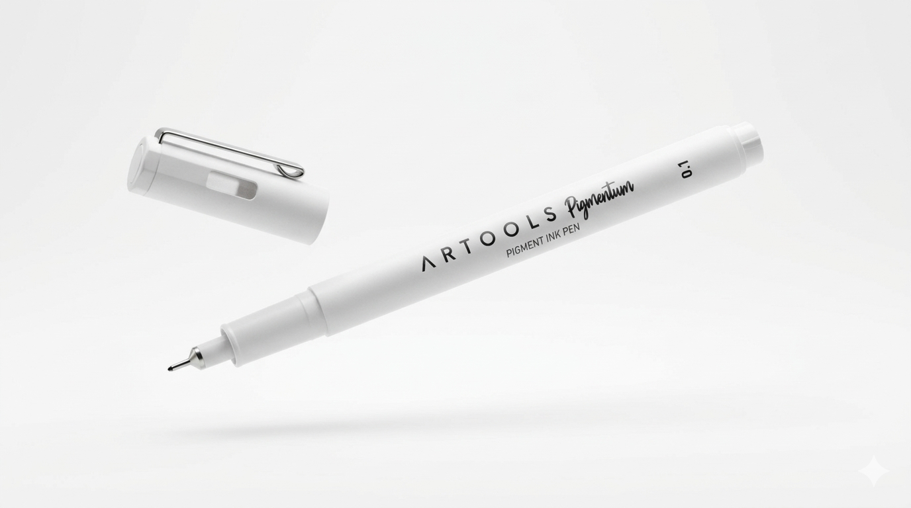
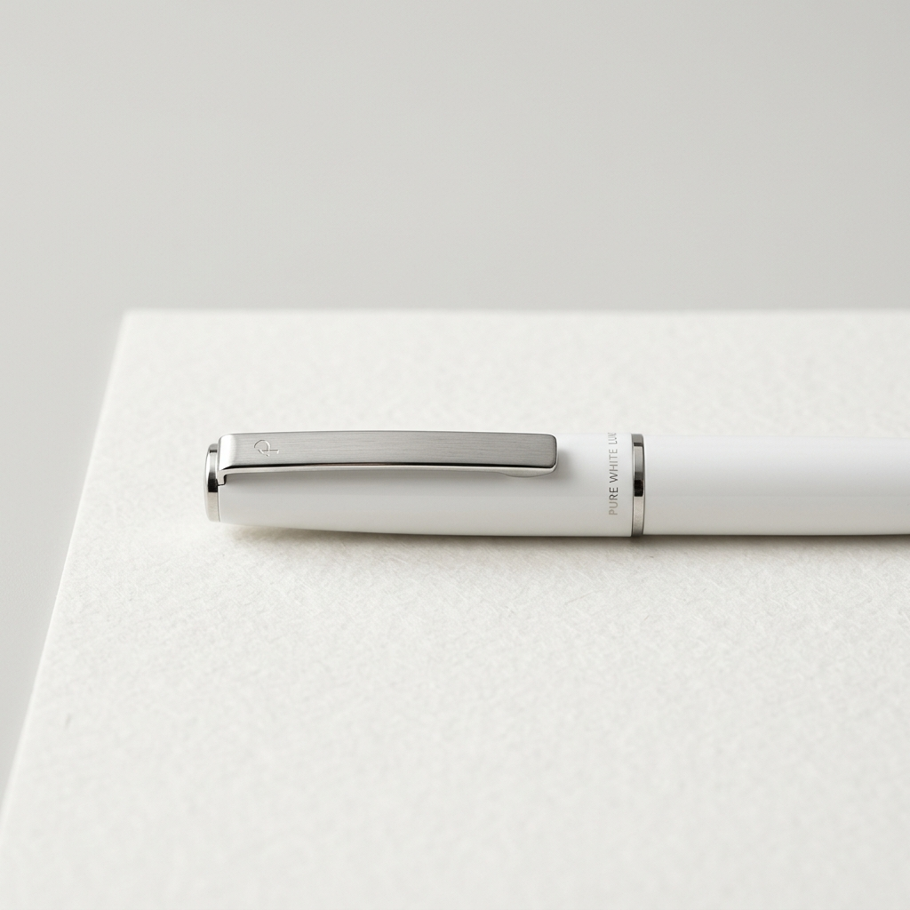
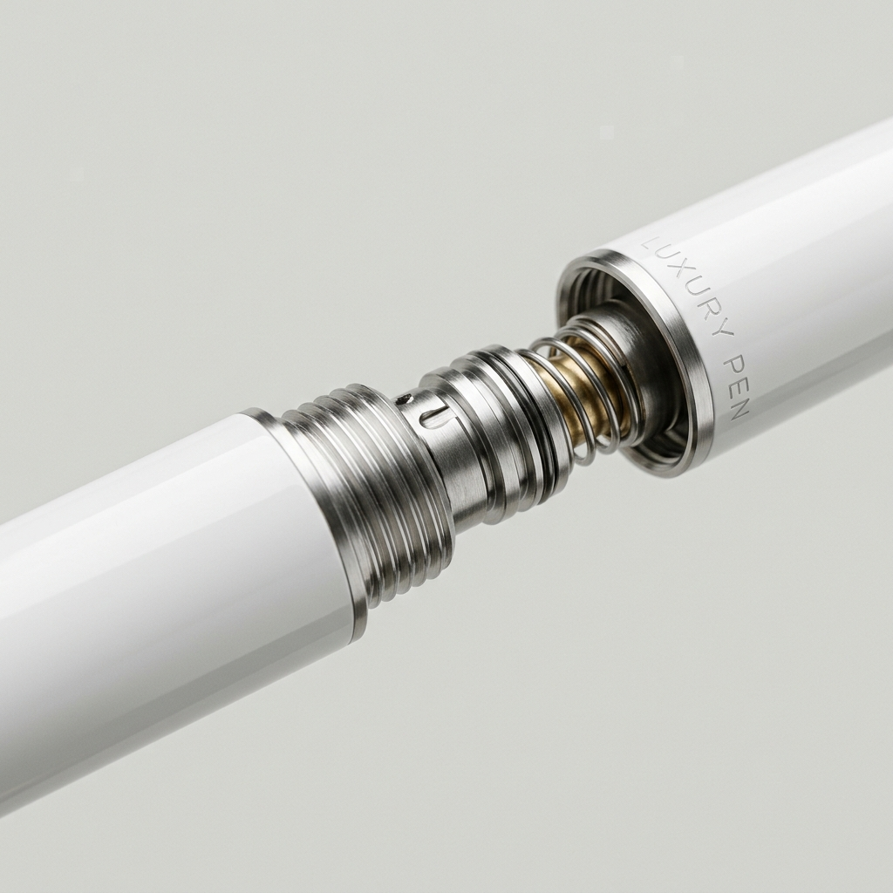

Escrita Absoluta.
Onde a engenharia de precisão encontra a elegância atemporal. Redescubra o peso e a fluidez dos seus pensamentos em sua forma mais pura.
Nossa arquitetura de fluxo proprietária sincroniza a deposição de tinta em tempo real. Construída sobre um chassi de alumínio aeroespacial usinado em CNC de 5 eixos.

Estrutura monobloco usinada em Alumínio 6061-T6. Leveza extrema (14g) com resistência estrutural de nível militar.
Sistema de tinta de baixa viscosidade com regulação por capilaridade assistida. O traço nunca falha até 15°.
Micro-usinagem a laser cria uma superfície de aderência perfeita (Ra 0.8um) sem acumular resíduos superficiais.

A verdadeira engenharia não é vista, é vivenciada. Sintetizamos um polímero de matriz cristalina que reage de forma orgânica ao menor contato com as fibras do papel. Sem falhas. Sem interrupções. Apenas um fluxo contínuo e impecável desenhado para blindar a velocidade do seu pensamento.
O controle absoluto exige mais que leveza; exige distribuição milimétrica. A coroa capilar e o corpo em alumínio aeroespacial 6061 foram calibrados metodicamente para que a caneta repouse de forma simbiótica no arco da sua mão. Zero fadiga muscular. Cento e cem por cento de foco criativo.

Por trás de uma superfície minimalista de pureza inegável, esconde-se um invólucro hiper-resistente. Projetada para suportar pressões extremas, a Pigmentum é uma cápsula de durabilidade vitalícia construída não apenas para você, mas para os seus herdeiros.
Design atemporal validado impecavelmente através da refração da luz. Construída em liga aeroespacial para imortalizar o primeiro traço da sua história.